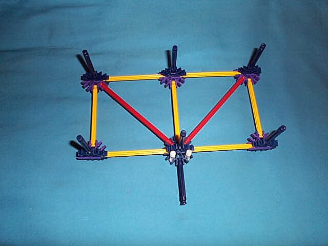

The bit frame is the structure on which all of the logic elements, are mounted. There is one of these structures for each control stage (connected horizontally) and one for each bit (connected vertically. Bit frames comprise a substantial portion of the structure of the knex-i-comp.
The upright blue struts connect up the the next level.
For multiple control stages, the bit frames connect end-to-end with each bit frame sharing the blue and purple connectors at their corners with their neighbors.
The upright white struts serve as the hinge pins on which the actuator rods swing.